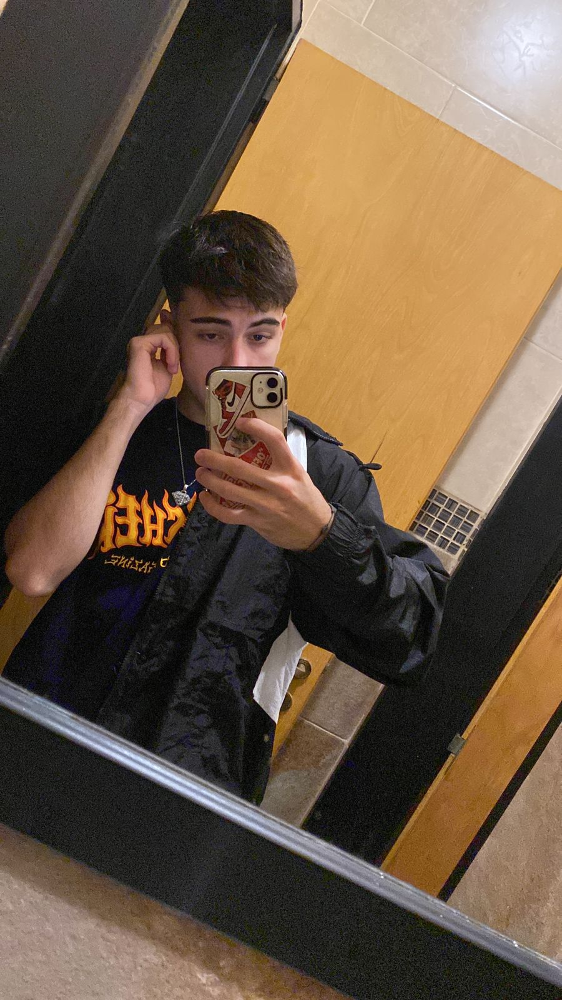

Spider-man

Spider-Man, traducido en ocasiones como el Hombre Araña, es un personaje creado por los estadounidenses Stan Lee y Steve Ditko, e introducido en el cómic Amazing Fantasy n.° 15, publicado por Marvel Comics en agosto de 1962. Se trata de un superhéroe que emplea sus habilidades sobrehumanas, reminiscentes de una araña, para combatir a otros supervillanos que persiguen fines siniestros. Tras su primera aparición en Amazing Fantasy, Marvel decidió producir una serie individual titulada The Amazing Spider-Man, cuyo ejemplar inicial salió a la venta en marzo de 1963. Desde entonces se han distribuido otros varios cómics relacionados con el personaje, así como otros productos que han derivado en el establecimiento de una franquicia de medios. Si bien posee múltiples versiones alternativas que han propiciado el desarrollo de un multiverso, los orígenes y rasgos principales de Spider-Man han permanecido mayormente invariables con el transcurso del tiempo. Generalmente su identidad secreta es Peter Parker, un joven huérfano neoyorquino que adquiere superpoderes después de ser mordido por una araña radiactiva, y cuya ideología como héroe se ve reflejada primordialmente en la expresión «un gran poder conlleva una gran responsabilidad». Suele ser asociado con una personalidad bromista, amable, inventiva y optimista, lo que le ha llevado a ser catalogado como el «vecino amigable» de cualquiera lo cual, aunado a sus vivencias caracterizadas por los problemas cotidianos, atrajeron el interés del público al contrastar con el arquetipo de superhéroe de la industria. Entre sus habilidades destacan la fuerza, el combate y la inteligencia, además de ser capaz de producir y lanzar telarañas sintéticas con ayuda de unos lanzadores que van sujetos a sus muñecas; trepar, adherirse y desplazarse a través de muros y edificaciones; y percibir peligros y amenazas a su alrededor de forma precognitiva gracias a su «sentido arácnido».
Enemigos
-
Duende verde

-
Dr. Octopus
-
Sandman

-
Rhino

- Venom 
Trajes
Traje Casero

Como traje, hay que decir que es bastante socorrido, aunque dista mucho de los grandes supertrajes a los que estamos acostumbrados. Sin embargo, tiene algunos detalles interesantes. Los lanzarredes domésticos, creados por Pete, junto a la fórmula de las telarañas. Además, las gafas, aparentemente incómodas, tienen su función. Debido a la picadura de la araña, los sentidos de Peter están más agudizados, de ahí que llevarlas puestas le sirva para centrarse y no distraerse mientras se balancea.
Tecnotraje

Debido a la implicación de Tony Stark en el proceso de formación del héroe, este traje tiene algunos gadgets y características que mejoran la "experiencia Spider-man" Entre las características más destacadas del traje tecnológico de Spidey, contamos: Una IA que responde al nombre de Karen y que controla las funciones principales del uniforme; diversos modos de combate, casi automatizados; lanzarredes mejorados con diversos tipos de telarañas (de impacto, aturdidoras, rastreadoras, etc...); lentes mejoradas con rayos-X y un HUD; modo de rastreo, sellado al vacío (que le permite llevarlo como ropa interior); y un largo etcétera de funciones que todavía no hemos visto.
Iron Spider

El Iron Spider del UCM es una armadura ligera que incorpora tecnología Iron Man, aplicada para mejorar los poderes de Spider-man. Además de tener autonomía espacial, también cuenta con un blindaje similar al de la Mark V, de Iron Man, pero con la nanotecnología de la Mark L incorporada.